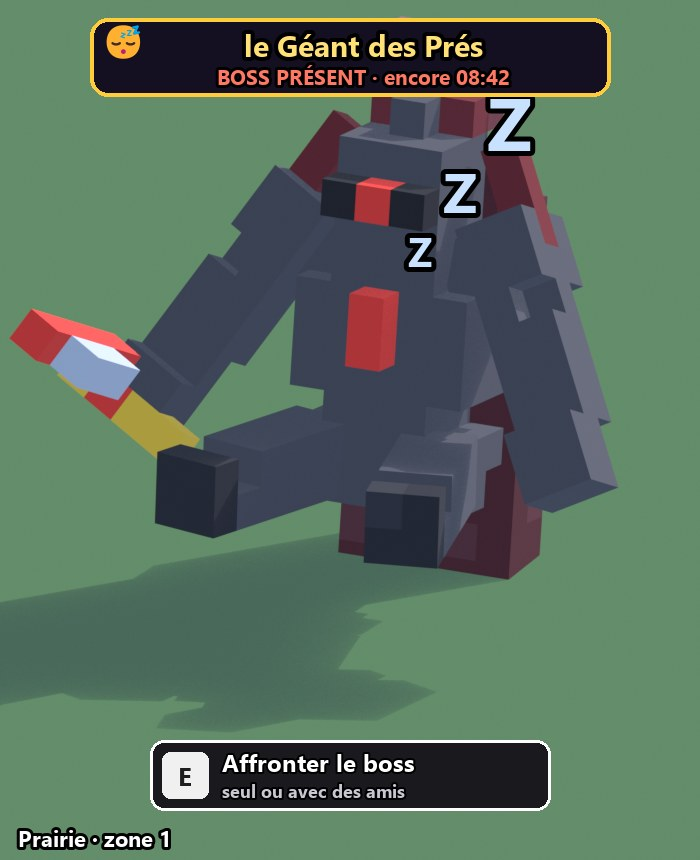
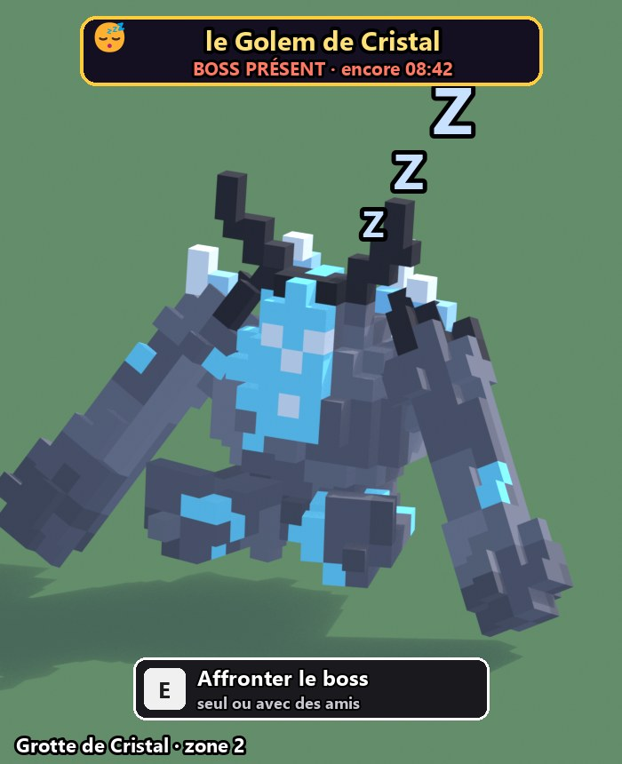
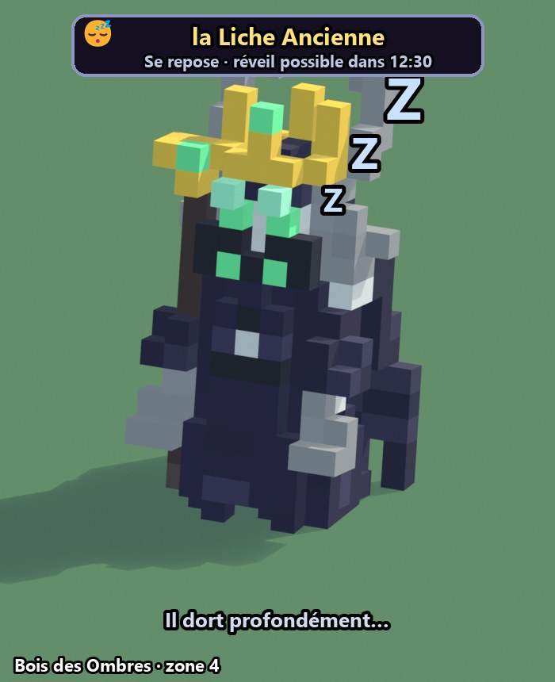
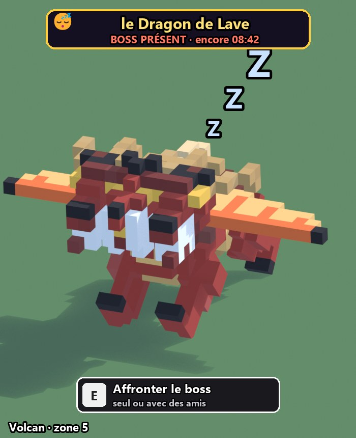
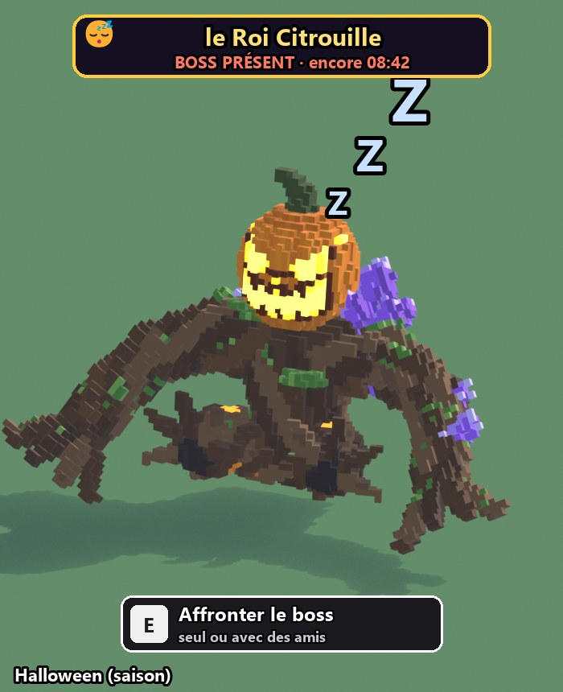

Proposition, rien n'est changé dans le jeu. Les images sont les vrais boss du jeu, en rendu 3D, dans une nouvelle pose assis et endormi (couché pour le dragon). Par-dessus, j'ai ajouté ce que le joueur verra : les « Z z z », l'étiquette du boss et le bouton pour l'affronter.
1. Le boss dort dans sa clairière

Prairie · le Géant des Prés présent : on peut l'affronter

Grotte de Cristal · le Golem de Cristal présent

Bois des Ombres · la Liche Ancienne pendant les 20 min de repos : on le voit dormir, mais il ne se réveille pas

Volcan · le Dragon de Lave couché, ailes à plat

Halloween · le Roi Citrouille boss de saison : il remplace celui d'une zone pendant l'événement
Dans le jeu, le boss respire doucement : son corps monte et descend. Des « Z » montent au-dessus de sa tête, et un petit ronflement se fait entendre quand on s'approche. Les boss du Royaume des Glaces (le Yéti) et du Royaume Céleste (le Griffon) sont à créer.
2. Le déroulement
1On s'approche
Le boss dort au milieu de sa clairière, visible par tout le monde.
Pendant les 10 minutes de présence, le bouton « Affronter le boss » apparaît à côté de lui.
Pendant les 20 minutes de repos, il dort aussi, avec « réveil possible dans 12:30 ».
2Seul ou avec des amis
Le panneau de groupe de la première version s'ouvre (maquette ci-dessous).
Tu peux inviter jusqu'à 2 joueurs du serveur, amis en premier ⭐.
Ils reçoivent une invitation Accepter / Refuser.
3Le boss se réveille
« Lancer le combat » : le boss se réveille en se levant d'un coup, avec un rugissement et une onde de choc, et le combat commence.
Comme avant, chaque groupe a son propre boss. Pour les autres joueurs, le boss continue de dormir, et ils peuvent lancer leur propre combat.
4Victoire
Même système de combat qu'aujourd'hui : esquiver les cercles, ton équipe de créatures attaque.
Butin selon ta participation, une victoire par boss et par passage.
Ensuite, pour toi, le boss se rendort.
3. Le panneau « seul ou avec des amis » (celui de la première version)
⚔️ Combat de boss
ZONE 2 · MOYEN
le Golem de Cristal Vie ×3 · butin : œufs rares, cristaux
👑 Toi chef
Lina ⭐ a accepté
+ Place libre
⭐ Tom (ami)Inviter
⭐ Zoé (amie)Invité…
KenjiInviter
⚔️ Lancer le combat
Tu peux aussi le lancer seul tout de suite.
📨 Invitation
Max ⭐ t'invite à affronter le Golem de Cristal (Grotte de Cristal).
AccepterRefuser
L'invitation expire au bout de 25 s.
Ce qui reste comme la première version : groupes de 3 joueurs maximum, invitations, un boss par groupe, un combat de 5 min au plus, une vie qui grandit avec le nombre de joueurs, et un butin selon la participation.
Ce qui change : le boss est dans sa zone au lieu de l'arène, il dort avant le combat, et sa difficulté dépend de la zone.
Question : pendant les 20 minutes de repos, tu préfères que le boss reste visible endormi (comme sur l'image du Bois des Ombres), ou qu'il disparaisse et que la clairière affiche seulement « Le boss revient dans 12:30 » ?